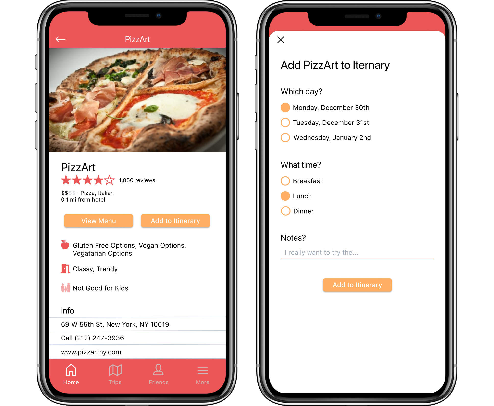
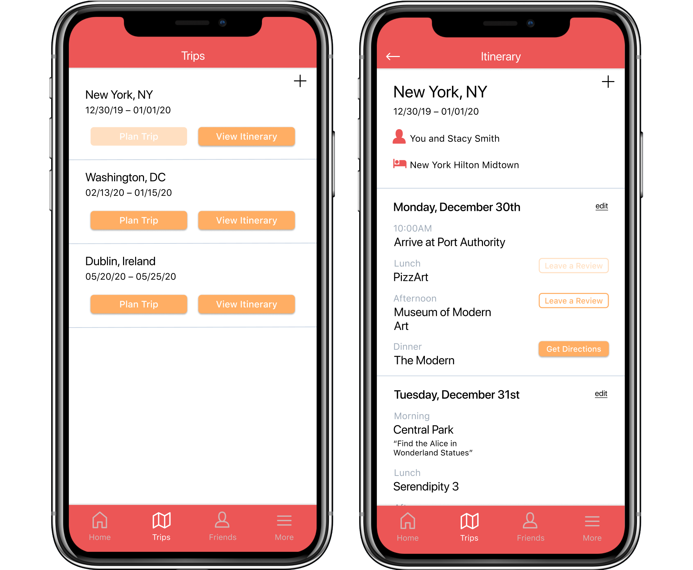

Fall 2019 / 3 weeks
Skills: UX/UI design
A mobile app to relieve the stress of planning a trip.
Redesign Yelp for a different, specific use case.
I decided to redesign Yelp by targeting tourists. Yelp currently targets a large demographic, with a focus on the local demographic, with features such as delivery. It also promotes utility businesses, which is unnecessary information for a tourist.
I determined tourists’ needs:1 ) Trip planning in one app2 ) Help finding things to do in an unknown city
The main feature is the ability for users to create itineraries for their upcoming trips, based on reviews by other travelers.

Users input their hotel and their interests so that the app can recommend activities that best match the user. If users don’t have a trip booked yet, they can still browse the app to determine where they want to travel to next.
Users can browse through recommended activities or search for activities. On the activities page, there is information about the attraction and reviews from other users. Users can then add activities to their itinerary, where they select the day and time they want to go to that place. When it is the day of the activity, users are given directions on how to get to the location. Users are not prompted to add reviews until after the time of the activity has passed.
